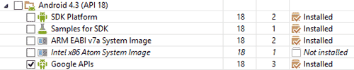
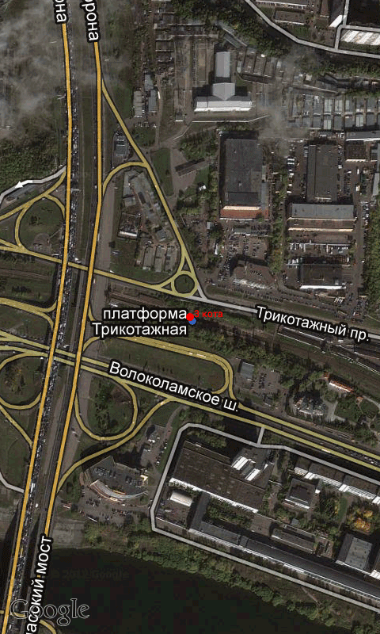
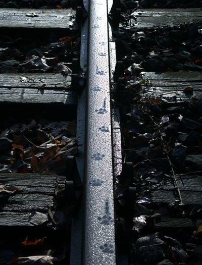
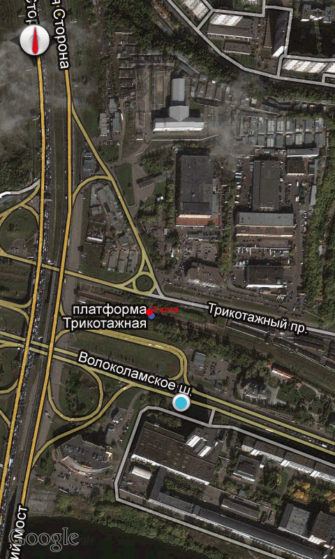
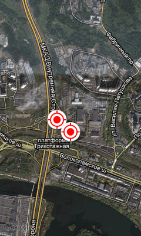
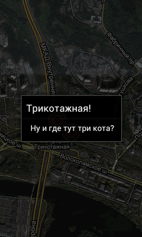
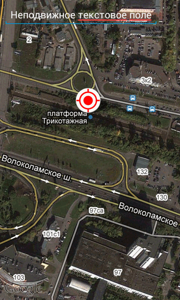
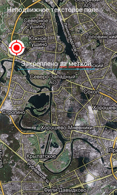
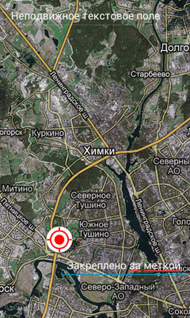

/* Моя кошка замечательно разбирается в программировании. Стоит мне объяснить проблему ей - и все становится ясно. */
John Robbins, Debugging Applications, Microsoft Press, 2000

/* Моя кошка замечательно разбирается в программировании. Стоит мне объяснить проблему ей - и все становится ясно. */
John Robbins, Debugging Applications, Microsoft Press, 2000
Не в том смысле, что не проведёт к месту, где встречаются коты, а в том смысле, что не обманет, намеренно заблудившись в лесу. Нам на помощь придут карты Google.
Вступление
Maps API Key
Основые классы для картографии
Класс MapActivity
Класс MapView
MapController
Overlay
Класс Projection - Знакомство с проекциями
MyLocationOverlay - Текущее положение
ItemizedOverlays и OverlayItems
Добавление представлений на карту
Библиотека Android MapView Balloons
В статье, посвященной геолокации, рассказывалось о способе запуска внешней программы Карты Google. Это самый простой способ. Если вам нужно использовать встроенную карту, то вам нужно познакомиться с библиотекой MapView. Напомню, что для работы с картографическими технологиями от Гугла необходимо устанавливать на эмулятор Google APIs by Google Inc.
Для работы со встроенной картой MapView необходимо получить ключи - один для debug-версии, а второй для release-версии вашего приложения. Без ключа для API MapView не загрузит необходимые для отображения карты фрагменты.
Для получения ключа нужно указать MD5-слепок сертификата, использующегося для подписи приложения. Как правило, подписывать свои приложения вы будете с помощью двух сертификатов — отладочного, созданного по умолчанию, и реального.
Рассмотрим процес получения ключа для debug-версии. Если вы применяете Eclipse с дополнением ADT для отладки приложения, он уже поставляется с отладочным сертификатом по умолчанию. Для того чтобы отображать карту во время отладки, нужно получить ключ к API карт, зарегистрированный через слепок MD5 отладочного сертификата. Найдите на своем компьютере файл debug.keystore. Для Windows 7 это будет:
C:\Users\<user>\.android\debug.keystore
Для OS X and Linux:
~/.android/debug.keystore
Далее вы должны получить ключ при помощи утилиты keytool, которая идёт вместе с Java и находится примерно по такому пути "C:\Program Files\Java\jre6\bin".
Запускайте командную строку и выполняйте следующую команду:
keytool -list -alias androiddebugkey -keystore C:\Users\<ваш_профиль>\.android\debug.keystore -storepass android -keypass android
В итоге у вас появится сгенерированная MD5-строка. Далее нужно перейти по адресу https://developers.google.com/android/maps-api-signup и ввести в поле эту строку. Google сгенерирует ключ для тестовых приложений.
Для подписанных приложений, которые вы собираетесь размещать на Google Play, принцип такой же, только используется не debug.keystore, а хранилище ключей:
keytool -list -alias alias_name -keystore my-release-key.keystore
Чтоб не менять ключи вручную каждый раз, можно создать два макета с картой и написать в коде что-то типа:
// выбираем нужный макет с определенным API key
if (debug) {
setContentView(R.layout.map_debug);
} else {
setContentView(R.layout.map_release);
}
Основные классы, которые используются для поддержки картографии в Android:
Если вы используете карты в своем приложении, то должны наследовать класс MapActivity вместо стандартного Activity. Разметка нового класса обязана включать MapView для отображения карт Google Maps. У класса MapActivity есть два обязательных метода: знакомый нам метод onCreate(), чтобы вывести на экран MapView, и isRouteDisplayed(), который должен возвращать true, если наша активность будет выводить информацию о маршрутах (например, направление движения).
Элемент MapView предоставляет интерфейс для отображения географических данных на карте. MapView позволяет создавать приложения, обладающие возможностями интерактивной карты и поддерживает нанесение аннотаций с помощью маркеров и закрепление элементов управления за определенной точкой на карте. Класс MapView предоставляет полный контроль над внешним видом карты, позволяет менять масштаб, местоположение и режим отображения (спутниковый, уличный и транспортный). Картографическая библиотека MapView является нестандартным пакетом, который не входит в состав Android. Поэтому библиотека должна быть явно внесена в манифест приложения перед использованием. Добавьте библиотеку в ваш манифест, включив его внутрь узла application:
<uses-library android:name="com.google.android.maps" />
MapView загружает фрагменты карты при необходимости. В связи с этим он косвенно требует полномочий для использования Интернета. Поэтому нужно добавить разрешение на пользование интернетом:
<uses-permission android:name="android.permission.INTERNET"/>
Также при желании можете выбрать для активности тему, которая выводится без заголовков, например, Theme.Light.NoTitleBar.Fullscreen, чтобы использовать больше места для карты:
<activity
android:name=".MainActivity"
android:label="@string/title_activity_main"
android:theme="@android:style/Theme.Light.NoTitleBar.Fullscreen" >
...
</activity>
Создадим простой пример интерактивной карты. Добавим в разметку элемент MapView:
<?xml version="1.0" encoding="utf-8"?>
<com.google.android.maps.MapView xmlns:android="http://schemas.android.com/apk/res/android"
android:id="@+id/map_view"
android:layout_width="fill_parent"
android:layout_height="fill_parent"
android:apiKey="Ваш_ключ"
android:clickable="true" />
В атрибуте apiKey необходимо прописать свой ключ, про который говорилось выше.
Далее переходим к коду.
public class MainActivity extends MapActivity {
@Override
public void onCreate(Bundle savedInstanceState) {
super.onCreate(savedInstanceState);
setContentView(R.layout.activity_main);
}
@Override
public boolean onCreateOptionsMenu(Menu menu) {
getMenuInflater().inflate(R.menu.activity_main, menu);
return true;
}
@Override
protected boolean isRouteDisplayed() {
// TODO Auto-generated method stub
// Этот метод должен возвращать true, если ваша активность
// показывает направления движения. В ином случае он должен
// вернуть false.
return false;
}
}
Это минимальный код для вывода карты. Но использовать ёё в таком виде невозможно, единственное, что мы можем сделать - просто перемещать карту на экране.
По умолчанию MapView выводит стандартную схематическую карту. Вы можете выбрать спутниковый и транспортный режимы отображения. При желании отобразите стандартные элементы управления масштабом, воспользовавшись методом setBuiltInZoomControls().
private MapView mapView;
@Override
public void onCreate(Bundle savedInstanceState) {
super.onCreate(savedInstanceState);
setContentView(R.layout.activity_main);
mapView = (MapView)findViewById(R.id.map_view);
mapView.setSatellite(true);
mapView.setTraffic(true);
mapView.setBuiltInZoomControls(true);
}
Можно также делать запросы к MapView, чтобы получить текущий и максимальный доступный уровни масштаба наряду с центральной точкой на карте, а также широтой и долготой отображаемого участка карты (в десятичных градусах). Данные координаты пригодятся для поисков с помощью геокодировщика на ограниченных участках.
int maxZoom = mapView.getMaxZoomLevel();
GeoPoint center = mapView.getMapCenter();
int latSpan = mapView.getLatitudeSpan();
int longSpan = mapView.getLongitudeSpan();
MapController используется для наведения и масштабирования MapView. Вы можете получить ссылку на элементы управления MapView с помощью метода getController.
MapController mapController = mapView.getController();
Местоположения на карте в картографических классах Android представлены объектами GeoPoint, которые содержат широту и долготу, измеряемые в микроградусах. Чтобы перевести градусы в микроградусы, умножьте значение на миллион (1 000 000).
Если у вас есть значения широты и долготы, хрнящиеся в объекте Location, полученном из геолокационных сервисов, необходимо перевести их в микроградусы и передать объекту GeoPoint.
Double lat = 37.422006*1E6;
Double lng = -122.084095*1E6;
GeoPoint point = new GeoPoint(lat.intValue(), lng.intValue());
Отцентрируйте и масштабируйте MapView с помощью методов setCenter() и setZoom(), доступных из объекта MapController, принадлежащего MapView.
mapController.setCenter(point);
mapController.setZoom(1);
При использовании setZoom значение 1 соответствует самому малому (удаленному) масштабу, а 21 — самому большому (приближенному).
Фактический масштаб, доступный для конкретной местности, зависит от разрешения карт Google Maps и качества снимков этого района. Вы также можете использовать методы zoomIn() и zoomOut(), чтобы изменять масштаб на одно значение в ту или иную сторону.
Метод setCenter() установит новое текущее местоположение, для показа плавного перехода воспользуйтесь методом animateTo():
mapController.animateTo(point);
Наложения позволяют добавлять к MapView аннотации и обработку нажатий. Каждое наложение — это холст с прозрачным фоном, который наслаивается на MapView и используется для обработки событий при нажатии. На каждом наложении можно рисовать двумерные примитивы, включая текст, линии, изображения и геометрические фигуры. После этого содержимое холста накладывается на MapView.
Вы можете добавить несколько наложений на одну карту. Все они размещаются в виде слоев, поэтому новые могут перекрывать старые. Пользовательские нажатия передаются через стек и обрабатываются наложением или зарегистрированными обработчиками событий в самом элементе MapView.
Для добавления нового наложения необходимо создать новый класс, наследующий Overlay. Переопределите метод draw(), чтобы нарисовать аннотации, которые хотите внести. Переопределите обработчик onTap(), чтобы реагировать на нажатия (происходит, когда пользователь нажимает на аннотации, добавленные данным наложением).
package com.example.mapsdemo;
import android.graphics.Canvas;
import com.google.android.maps.GeoPoint;
import com.google.android.maps.MapView;
import com.google.android.maps.Overlay;
public class MyOverlay extends Overlay {
@Override
public void draw(Canvas canvas, MapView mapView, boolean shadow) {
if (shadow == false) {
//[ . . . Рисуем аннотации на главном слое карты . . . ]
}
else {
//[ . . . Рисуем аннотации на затененном слое . . . ]
}
}
@Override
public boolean onTap(GeoPoint point, MapView mapView) {
// Верните true, если нажатие на экран обрабатывается данным Наложением
return false;
}
}
Холст для рисования аннотаций на наложении — это обычный объект Canvas, видимая поверхность экрана. Чтобы добавить аннотации, основанные на физическом местоположении, нужно преобразовать географические точки в экранные координаты.
Класс Projection позволяет переводить значения широты/долготы, которые хранятся в объекте GeoPoint, в координаты пиксела на экране (хранятся в виде объекта Point).
Проекция карты может меняться при перерисовке, поэтому желательно каждый раз получать новый экземпляр проекции. Вызовите метод getProjection(), чтобы получить проекцию для MapView.
Projection projection = mapView.getProjection();
Используйте методы fromPixel() и toPixel(), чтобы переводить GeoPoint в Point и наоборот.
Для повышения производительности лучше передавать в метод toPixel() объект Point с последующим его заполнением (а не получать возвращаемое значение)
Point myPoint = new Point();
// В координаты экрана
projection.toPixels(geoPoint, myPoint);
// В географические координаты GeoPoint
projection.fromPixels(myPoint.x, myPoint.y);
Чтобы рисовать на наложении, нужно переопределить обработчик draw(), принадлежащий объекту Overlay. Объект Canvas, передающийся в этот метод, выступает поверхностью, на которой вы будете рисовать свои аннотации. Объект Canvas включает методы для рисования двумерных примитивов на вашей карте (в том числе линии, текст, различные фигуры, эллипсы, изображения и т. д.). Используйте объект Paint, чтобы определить стили и цвета. Итак, давайте создадим новый класс MyOverlay и создадим красный кружочек с надписью:
package com.example.mapsdemo;
import android.graphics.Canvas;
import android.graphics.Paint;
import android.graphics.Point;
import android.graphics.RectF;
import com.google.android.maps.GeoPoint;
import com.google.android.maps.MapView;
import com.google.android.maps.Overlay;
import com.google.android.maps.Projection;
public class MyOverlay extends Overlay {
Double lat = 55.833167 * 1E6;
Double lng = 37.398949 * 1E6;
@Override
public void draw(Canvas canvas, MapView mapView, boolean shadow) {
Projection projection = mapView.getProjection();
GeoPoint geoPoint = new GeoPoint(lat.intValue(), lng.intValue());
if (shadow == false) {
Point myPoint = new Point();
projection.toPixels(geoPoint, myPoint);
// Создайте и настройте вашу кисть для рисования
Paint paint = new Paint();
paint.setARGB(250, 255, 0, 0);
paint.setAntiAlias(true);
paint.setFakeBoldText(true);
// Создайте окружность
int rad = 5;
RectF oval = new RectF(myPoint.x - rad, myPoint.y - rad, myPoint.x
+ rad, myPoint.y + rad);
// Нарисуйте на холсте текст и эллипс
canvas.drawOval(oval, paint);
canvas.drawText("3 кота", myPoint.x + rad, myPoint.y, paint);
} else {
// [ . . . Рисуем аннотации на затененном слое . . . ]
}
}
@Override
public boolean onTap(GeoPoint point, MapView mapView) {
// Верните true, если нажатие на экран обрабатывается данным Наложением
return false;
}
}
Чтобы обрабатывать нажатия на карте, переопределите обработчик onTap() внутри наследованного от Overlay класса.
Обработчик onTap() принимает два параметра:
При переопределении метода onTap() учитывайте, что он должен возвращать true, если сам обрабатывает конкретное нажатие, и false, если дает возможность наложению проводить обработку данного события.
@Override
public boolean onTap(GeoPoint point, MapView mapView) {
// Perform hit test to see if this overlay is handling the click
if ([ . . . выполнить проверку нажатия . . . ]) {
[ . . . выполнить обработку нажатия . . . ]
return true;
}
// Если обрабатывать не нужно, верните false
return false;
}
Каждый объект MapView содержит список наложений, которые отображаются в данный момент. Вы можете получить ссылку на этот список, вызвав метод getOverlays():
List<Overlay> overlays = mapView.getOverlays();
Элементы этого списка добавляются и удаляются синхронно и в безопасном потоковом режиме, поэтому вы можете спокойно изменять перечень и делать к нему запросы. Вы также должны перебирать элементы списка внутри блока синхронизации, который в свою очередь синхронизируется с объектом List.
Чтобы добавить наложение на MapView, создайте новый экземпляр класса Overlay и внесите его в список:
List<Overlay> overlays = mapView.getOverlays();
MyOverlay myOverlay = new MyOverlay();
overlays.add(myOverlay);
mapView.postInvalidate();
Добавленное наложение будет выведено при следующей перерисовке MapView, поэтому не помешает вызвать метод postInvalidate после изменения списка, чтобы обновить изменения на карте.
Вернёмя к главной активности и добавим код в метод onCreate():
@Override
public void onCreate(Bundle savedInstanceState) {
super.onCreate(savedInstanceState);
setContentView(R.layout.activity_main);
mapView = (MapView) findViewById(R.id.map_view);
mapView.setSatellite(true);
mapView.setBuiltInZoomControls(true);
mapController = mapView.getController();
List overlays = mapView.getOverlays();
MyOverlay myOverlay = new MyOverlay();
overlays.add(myOverlay);
GeoPoint point = new GeoPoint(myOverlay.lat.intValue(), myOverlay.lng.intValue());
mapController.setCenter(point);
mapController.setZoom(16);
mapView.postInvalidate();
}
Если запустить проект, то в указанных координатах (здесь находится платформа Трикотажная) отобразится красная точка с текстом 3 кота. Как видно из названия, платформа названа в честь трёх котов. Для удобства я отцентрировал карту по заданным координатам, взятых из класса myOverlay.
Синий кружочек выводится самой картой, а наш красный кружочек практически совпал с ним, возможно три кота пошли гулять по платформе.
Класс MyLocationOverlay — специальный вид наложения, спроектированный для того, чтобы показывать ваше текущее местоположение и ориентацию на объекте MapView.
Чтобы применить MyLocationOverlay, требуется создать новый экземпляр, передав ему в качестве параметров объект Context приложения и элемент MapView, и добавить его в список наложений в MapView:
List<Overlay> overlays = mapView.getOverlays();
MyLocationOverlay myLocationOverlay = new MyLocationOverlay(this,
mapView);
overlays.add(myLocationOverlay);
Вы можете использовать MyLocationOverlay для отображения текущих местоположения (в виде синей мигающей отметки) и ориентации (в виде компаса на карте).
Модифицируем предыдущий код, чтобы включить отображение компаса и отметки.
...
mapView.setSatellite(true);
mapView.setBuiltInZoomControls(true);
mapController = mapView.getController();
List<Overlay> overlays = mapView.getOverlays();
MyOverlay myOverlay = new MyOverlay();
overlays.add(myOverlay);
GeoPoint point = new GeoPoint(myOverlay.lat.intValue(), myOverlay.lng.intValue());
mapController.setCenter(point);
mapController.setZoom(16);
MyLocationOverlay myLocationOverlay = new MyLocationOverlay(this,
mapView);
overlays.add(myLocationOverlay);
myLocationOverlay.enableMyLocation();
myLocationOverlay.enableCompass();
mapView.postInvalidate();
Если вы тестируете на эмуляторе, то можно указать свое местоположение через настройки эмулятора. Обратите только внимание, что если вы используете в эмуляторе русскую локаль, то в качестве разделителей используйте запятую, а не точку в настройке Location Controls.
В моём случае я указал, что нахожусь недалеко от платформы Трикотажная и соответствующая метка появилась на Волоколамском шоссе.

Не забудьте отключить определение местоположения при остановке/закрытии activity:
myLocationOverlay.disableMyLocation();
Объекты OverlayItem нужны, чтобы обеспечить простую функциональность вашему объекту MapView с помощью класса ItemizedOverlay.
Класс ItemizedOverlay предоставляет удобные и быстрые вызовы для добавления отметок на карту, позволяет задавать для них изображения и привязывать текст к конкретной географической позиции. Экземпляр ItemizedOverlay контролирует отрисовку, размещение, обработку нажатий, фокусировку и оптимизацию слоев для каждой отметки класса OverlayItem. По сути это более продвинутый пример использования Overlay.
Чтобы добавить слой с отметками на вашу карту, необходимо создать новый класс, наследующий от ItemizedOverlay.
Для начала необходимо вызвать конструктор родительского класса, определив границы для вашей отметки по умолчанию. Затем нужно обратиться к методу populate() для инициирования создания каждого элемента OverlayItem. Этот метод должен вызываться всякий раз, когда используемые данные меняются.
Внутри реализации класса MyItemizedOverlay переопределите метод size(). Он должен возвращать количество отметок для вывода на экран. Переопределите также метод createItem(), чтобы создавать новые элементы, основываясь на индексе каждой отметки. Создадим новый класс, скажем, HelloItemizedOverlay
package com.example.mapsdemo;
import java.util.ArrayList;
import android.app.AlertDialog;
import android.content.Context;
import android.graphics.drawable.Drawable;
import com.google.android.maps.ItemizedOverlay;
import com.google.android.maps.OverlayItem;
public class HelloItemizedOverlay extends ItemizedOverlay {
private ArrayList<OverlayItem> mOverlays = new ArrayList<OverlayItem>();
Context mContext;
public HelloItemizedOverlay(Drawable defaultMarker) {
super(boundCenterBottom(defaultMarker));
}
public HelloItemizedOverlay(Drawable defaultMarker, Context context) {
super(boundCenterBottom(defaultMarker));
mContext = context;
}
public void addOverlay(OverlayItem overlay) {
mOverlays.add(overlay);
populate();
}
@Override
protected OverlayItem createItem(int i) {
return mOverlays.get(i);
}
@Override
public int size() {
return mOverlays.size();
}
@Override
protected boolean onTap(int index) {
OverlayItem item = mOverlays.get(index);
AlertDialog.Builder dialog = new AlertDialog.Builder(mContext);
dialog.setTitle(item.getTitle());
dialog.setMessage(item.getSnippet());
dialog.show();
return true;
}
}
Возвращаемся к основной активности. Убираем предыдущий код, и напишем следующее:
public void onCreate(Bundle savedInstanceState) {
super.onCreate(savedInstanceState);
setContentView(R.layout.activity_main);
mapView = (MapView) findViewById(R.id.map_view);
mapView.setSatellite(true);
mapView.setBuiltInZoomControls(true);
mapController = mapView.getController();
List<Overlay> overlays = mapView.getOverlays();
Drawable drawable = this.getResources().getDrawable(R.drawable.ic_launcher);
HelloItemizedOverlay itemizedoverlay = new HelloItemizedOverlay(drawable, this);
Double lat = 55.833167 * 1E6;
Double lng = 37.398949 * 1E6;
GeoPoint point = new GeoPoint(lat.intValue(), lng.intValue());
OverlayItem overlayitem = new OverlayItem(point, "Трикотажная!", "Ну и где тут три кота?");
GeoPoint point2 = new GeoPoint(55834167, 37396949);
OverlayItem overlayitem2 = new OverlayItem(point2, "Вторая метка", "Коты, вы где?");
itemizedoverlay.addOverlay(overlayitem);
itemizedoverlay.addOverlay(overlayitem2);
overlays.add(itemizedoverlay);
mapController.setCenter(point);
mapController.setZoom(16);
mapView.postInvalidate();
}
Обратите внимание, что добавил сразу две отметки на карту - overlayitem и overlayitem2, у которых чуть отличаются координаты. Для экономии в качестве метки я использовал значок приложения, вы можете создать отдельный ресурс для своей метки. Запустив проект, вы можете щелкнуть по любой из меток, чтобы увидеть диалоговое окно.
 
Возможно вы увидели, что в классе HelloItemizedOverlay слово extends ItemizedOverlay подчеркнуто, рекомендуя добавить дополнительный параметр <Object>. Также можно добавить более удобный метод для добавления метки addNewOverlay() и метод для удаления метки removeOverlay(). Давайте перепишем класс:
package com.example.mapsdemo;
import java.util.ArrayList;
import android.app.AlertDialog;
import android.content.Context;
import android.graphics.drawable.Drawable;
import com.google.android.maps.GeoPoint;
import com.google.android.maps.ItemizedOverlay;
import com.google.android.maps.OverlayItem;
public class HelloItemizedOverlay extends ItemizedOverlay<OverlayItem> {
private ArrayList<OverlayItem> mOverlays = new ArrayList<OverlayItem>();
Context mContext;
public HelloItemizedOverlay(Drawable defaultMarker) {
super(boundCenterBottom(defaultMarker));
}
public HelloItemizedOverlay(Drawable defaultMarker, Context context) {
super(boundCenterBottom(defaultMarker));
mContext = context;
}
public void addOverlay(OverlayItem overlay) {
mOverlays.add(overlay);
populate();
}
@Override
protected OverlayItem createItem(int i) {
return mOverlays.get(i);
}
@Override
public int size() {
return mOverlays.size();
}
@Override
protected boolean onTap(int index) {
OverlayItem item = mOverlays.get(index);
AlertDialog.Builder dialog = new AlertDialog.Builder(mContext);
dialog.setTitle(item.getTitle());
dialog.setMessage(item.getSnippet());
dialog.show();
return true;
}
// расширенный вариант добавления метки
public void addNewOverlay(GeoPoint location, String markerText,
String snippet) {
mOverlays.add(new OverlayItem(location, markerText, snippet));
populate();
}
// удаляем метку
public void removeItem(int index) {
mOverlays.remove(index);
populate();
}
}
В основной активности можете добавить третью метку перед вызовом overlays.add(itemizedoverlay)
itemizedoverlay.addNewOverlay(new GeoPoint(55832167, 37393949),
"Третья метка", "Вы щелкнули на третьей метке");
Вы можете добавить на MapView любой объект, наследованный от View (включая разметку и другие группы представлений), прикрепляя их к определенной позиции на экране или к географическому местоположению.
В последнем случае представление последует за позицией на карте, к которой его прикрепили, демонстрируя поведение, аналогичное интерактивной отметке. Как более ресурсоемкое решение, оно обычно используется для показа всплывающих сообщений с информацией (часто применяется в гибридных проектах для предоставления детальных данных при нажатии на маркер).
Рассмотрим оба механизма для добавления представлений на карту, вызывая метод addView(), принадлежащий MapView. Как правило, это делается внутри методов onCreate() или onRestore() при реализации активности MapActivity. Передайте представление, которое хотите добавить на карту, и параметры разметки, которые желаете использовать.
Параметры MapView.LayoutParams, которые передаются в метод addView, определяют место на карте, куда представление будет добавлено.
Чтобы добавить новое представление на карту относительно экрана, задайте новый объект MapView.LayoutParams, например, после mapView = (MapView) findViewById(R.id.map_view);, включив в него аргументы, отвечающие за его высоту и ширину, экранные координаты x/y, а также способ выравнивания для позиционирования:
int y = 10;
int x = 10;
EditText editText1 = new EditText(getApplicationContext());
editText1.setText("Screen Pinned");
MapView.LayoutParams screenLP;
screenLP = new MapView.LayoutParams(MapView.LayoutParams.WRAP_CONTENT,
MapView.LayoutParams.WRAP_CONTENT, x, y,
MapView.LayoutParams.TOP_LEFT);
mapView.addView(editText1, screenLP);
Текстовое поле будет оставаться неподвижным при перемещении карты. На скриншоте видно, что текстовое поле с текстом Неподвижное текстовое поле расположилось в верхней части экрана и имеет прозрачный фон.

Чтобы закрепить представление на карте относительно физического местоположения, передайте конструктору LayoutParams четыре аргумента: высоту, ширину, объект GeoPoint, к которому будет привязано представление, а также выравнивание разметки:
// добавляем текстовое поле к метке
GeoPoint geoPoint = new GeoPoint(55833167, 37398949);
MapView.LayoutParams geoLP;
geoLP = new MapView.LayoutParams(MapView.LayoutParams.WRAP_CONTENT,
MapView.LayoutParams.WRAP_CONTENT, geoPoint,
MapView.LayoutParams.TOP_LEFT);
EditText editText2 = new EditText(getApplicationContext());
editText2.setText("Закреплено за меткой");
mapView.addView(editText2, geoLP);
Теперь второе текстовое поле будет двигаться при перемещении, а первое поле по-прежнему будет оставаться неподвижным.
 
Чтобы удалить представление из MapView, вызовите метод removeView(), передав ему в качестве аргумента экземпляр представления, которое хотите удалить:
mapView.removeView(editText2);
В дополнение к MapView можно использовать библиотеку с открытыми исходниками Android MapView Balloons, которая позволяет наносить на карту красивые сообщения, как в комиксах.
Адрес библиотеки на GiHub: https://github.com/jgilfelt/android-mapviewballoons